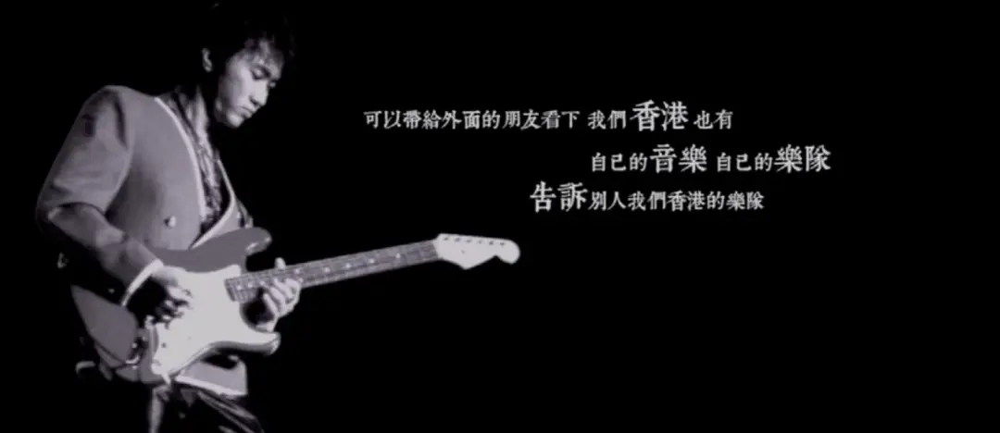
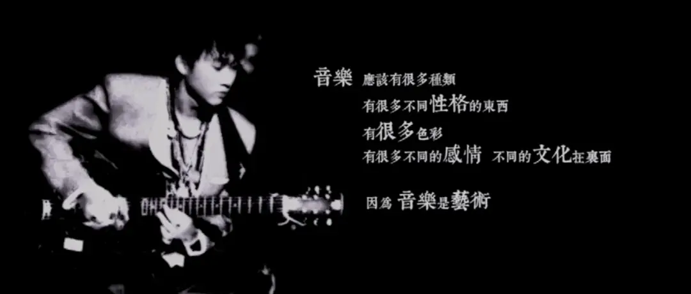

今天是2024年6月30日。
31年前的今天，家驹陨落。
那个时候，他31岁。
今年刚好也是他离开我们的31年。
令人唏嘘。
不知不觉，我自己搬到香港也已经一年多。
从高二开始喜欢家驹，一直到现在十几年的时间，仿佛是家驹指引我来到了他的故乡。
我曾经问过几个香港同事，在你们心里，黄家驹是一个怎样的存在。
大家都不自主的会愣一下，然后想一想说： 他像一个天使，太过于完美，仿佛不属于香港。
紧接着，我问他们，家驹所处的香港八十年代、九十年代，非常棒，有大量经典，你们怎么看那个时代。
同事说，那个时代的歌曲很好听，确实很厉害。
这个回答很平常，在他们的表情上，我竟然没有看到我期待的那种浓厚的怀旧和深情。
我笑着开玩笑说，你们这一代年轻人怎么这么不争气，这么“废青”，没有延续香港的辉煌。
同事意会了我的梗，说道：就像你们所理解、所认为的，我们是一群没用的“废青”，我们躺平了。
我们又聊了很多，最后谈起我自己的感受，我说，这几年，我感觉到一种大时代下个人的渺小和无力。
同事反过来说：不用担心，我们已经这样几十年了，你还需要时间去习惯。
我忽然有一种异常滞后的反应喷涌而出，是的，97对于香港是一个时代的年关。
香港的90后，似乎一直成长在一个下坠的时代里，香港的功夫片、警匪片，香港的音乐，从大众的感受上来看，影响力一直在降低。
他们也是眼睁睁的看着新加坡慢慢超过香港，步入工作之后，又是19年的风波和紧随之后的移民潮。
身边的朋友在离开，像我这样大陆背景的人群在快速壮大，香港人的优越感一而再的遭受着冲击.........
就我自己而言，我出生在中国大陆蓬勃发展的30年，只要大家去拼，还是有很大的机会获得成功。
2021年之前，我觉得身边人的面貌都是充满信心和野心的，2021年之后，身边很多人都主动、被动的选择了躺平。
面对就业环境和各样不确定性，要么润，要不苟，大家的生活相比于之前，多了不少压抑和宿命感。
不同的环境下，塑造了不同的彼此，我们必须要在互相理解中一起往前走。
香港作为一个多元化的移民城市，百年来，就是在不断的融合和差异中前进的。
这也是这个城市的魅力。
而我们要在这种多元化的环境里生活和成长，就需要努力在他人的脉络里理解他人，再进行对话和碰撞。
这样我们才会收获别人的尊重和真实的成长。

这也是家驹作品带给我的感受和启发。
很多人喜欢家驹和Beyond，是因为充满旋律感的律动和励志的歌词。
实际上，家驹的职业选择、作品呈现，能有如此大的魅力，是因此家驹对他人充满了尊重、理解和好奇。
因此，家驹可以从大卫.鲍伊汲取灵感，创作了很多非常优秀的早期作品。
他的吉他技术和作曲风格，也是在和不同乐队以及乐队内不同成员的学习和碰撞中不断提升。
在非洲之旅后，家驹可以创作出伟大的《光辉岁月》和《Amani》。
家驹在歌词里写道：缤纷色彩闪出的魅力，是因它没有，分开每种色彩。
生活是多样的，世界是多样的，如果艺术是真诚的，就不会回避这种多样性。
所以，家驹的歌曲题材非常广，涉及爱情、友情、个人成长、和平、战争、家国情怀.....
也正因为如此，香港最终难以满足家驹的成长需要，那个时候的香港，除了爱情和商业，留给严肃艺术的空间其实并不多。
也正因为家驹这种包容和追求，家驹的歌能够跨越不同种族，他的《海阔天空》恐怕是被其他民族和国家翻唱最多的歌曲。
因为，大家在家驹的歌里，感受到了理解、尊重和真诚。
高考完的那一个夜晚，同学通宵打游戏狂欢，我一遍又一遍听着《午夜怨曲》，家驹唱到：我与你也彼此一起艰苦过，写上每句冰冷冷的诗，不会放弃高唱这首歌，我与你也彼此真的相识过.......
这种亲切感，持续至今，即使我和他从未相识，我觉得家驹是最懂我的。
而随着反反复复的听，这种对于多元的尊重和追求，也早已经融入到我自己的生活选择和价值观中。
2015年大学毕业的时候，我选择了上海，当时最吸引我的是，上海的多元和包容。
在上海生活的8年，我认识了很多有意思的朋友，收获了很多陪伴和感动。
为了扎根上海，8年的时间，我搬了6次家，最后还差点碰上烂尾楼。
在漂泊中，我曾非常努力的想要留在上海。
2022年，封困在家的时候，我非常痛心地目睹了上海的多元、包容被践踏。
也在那段时间，已经停下来的脚步准备再次出发，我想趁着还有精力和勇气的时候，再出去看看。
对于上海，我未做过正式的告别。
就像六百击一样，忽然有一天，不再更新的那么频繁，现在基本上是年更。
但是，很多时候，正是出于对于这种深厚连接的信任和珍重，所以告别是无声的，无需多言。
在家驹离开的今天，特别想对上海的朋友说，请务必珍视这座城市的多元和包容，如果有一天，上海只有一种声音，那绝对是一个恐怖故事。

滑动下方区域
查看完整歌词
▼
无限唏嘘惜别天
含泪告别了无声
眸里倾出真挚心
凝望轻轻的嗟叹 难再聚
无奈空虚心内追
留下一丝丝回响
没法安于车厢中
遥望天边的一角 难再聚
风中飘着异土的引诱
细看朴素背影心痴醉
与你邂逅共对
与你进入梦里
点起恋火抚灼我
Give me all I need
彼此相拥轻沁透
It’s fantasy oh fantasy forever
炎夏过后秋复返
如梦片断涌着心
夜里执笔写记忆
留下欢欣的忆记 难再聚
风中飘着异土的引诱
细看朴素背影心痴醉
与你邂逅共对
与你进入梦里
点起恋火抚灼我
Give me all I need
彼此相拥轻沁透
It’s fantasy oh fantasy forever
点起恋火抚灼我
Give me all I need
彼此相拥轻沁透
It’s fantasy oh fantasy forever
风中飘着异土的引诱
细看朴素背影心痴醉
与你邂逅共对
与你进入梦里
点起恋火抚灼我
Give me all I need
彼此相拥轻沁透
It’s fantasy oh fantasy forever
点起恋火抚灼我
Give me all I need
彼此相拥轻沁透
It’s fantasy oh fantasy forever
-END-
推荐阅读
▼
（点击文字即可获取全文）
家驹的第一首怨曲
27年前，戛然而止的吉他，永不凋零的生命！
为音乐尊严而战，他们是严重被低估的乐队！
我是愤怒
即使看了那么多港片，没有这一部，依旧难懂香港